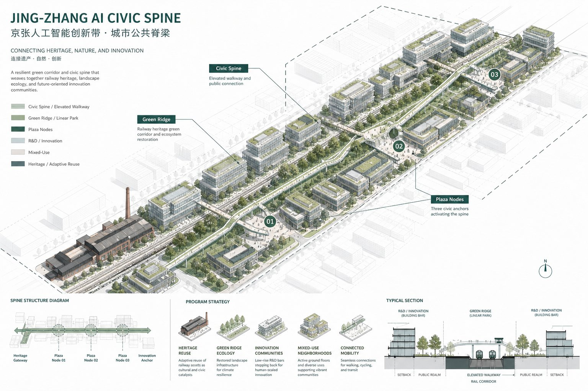
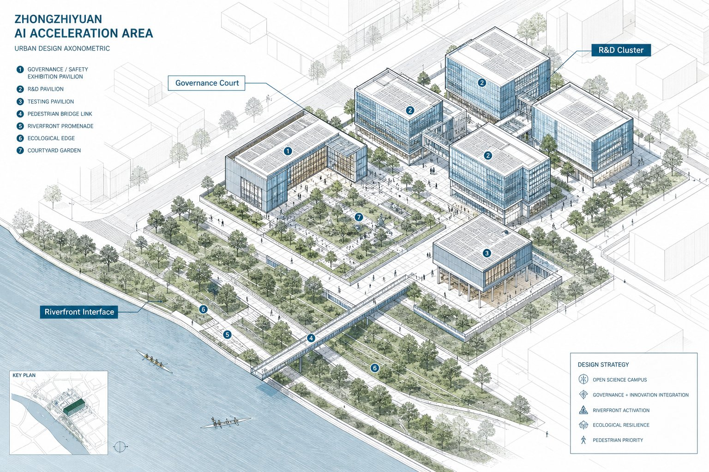
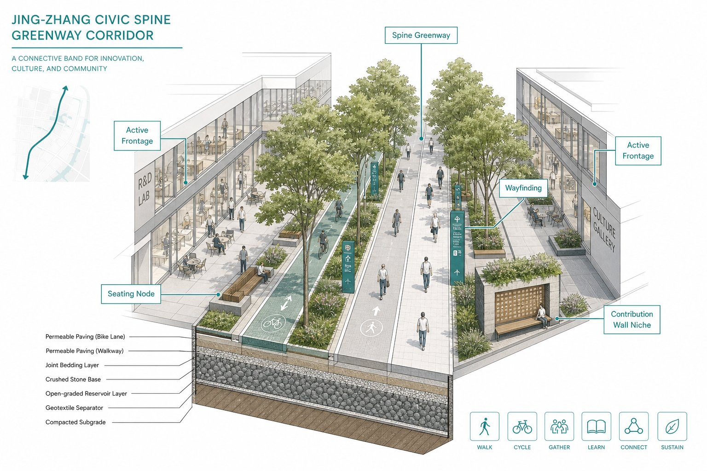
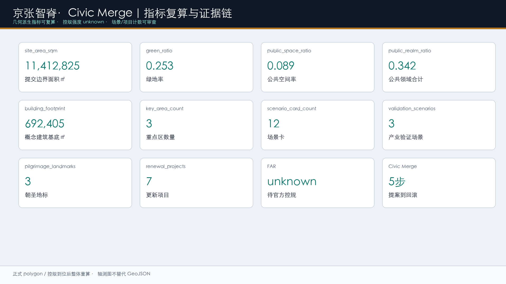

试跑
众智园加速区
清河界面 + 治理庭院。安全治理沙盒与全栈验证。

Haidian · Centennial Jing-Zhang · Open Call
公共领域先行，场景以「提案 → 沙盒 → 人工复核 → 合并 / 回滚」闭环落地。面向海淀百年京张AI创新带的城市设计概念建议。
Contents
对标方法（background only）：King's Cross 公共先行 · Kendall 近校短路径 · one-north 组团共享骨架。
Protocol
本方案的差异点不是又一条“智脊廊道”，而是把公共领域骨架绑定一套可审计的运营语法：任何 AI 场景或界面改造，都必须先说清受益者与资料边界，再进入限时限域沙盒，经人工与公众复核后才能合并入库；必要时回滚。
公共先行 · 文脉可步行 · 近校短路径 · 组团分化 · 混合有序 · 可审计智能体 · 低扰动更新 · 开放界面 · 长期运营 · 概念边界诚实
居民、青年、学生、高校、企业、游客与弱势群体可达，不把普通生活空间变成展示背景。


Land Use
五类条带全覆盖提交边界：蓝绿公园 25%、产业服务 23.8%、近校转化 19.3%、社区配套 17.6%、科研研发 14.4%。容积率等法定强度保持 unknown。
公共领域合计约 34.2%（概念复算）；King's Cross ~40% 仅作目标参照，不是已达承诺。
0802 允许底层展示；1401 兼容慢行活动；05 首层可混合路演；0804 允许转化展厅；0702 嵌入社区配套、禁侵扰业态。
Street Sections
| 断面族 | 要点 |
|---|---|
| A 智脊绿道 | 双慢行 + 树冠 + 可解释导视 |
| B 缝合步行街 | 共享路面 + 活跃首层 |
| C 站点接驳 | 四象限步行优先 |
FAR / 高度 / 退线 = unknown；正式控规到位后整体重算。
Three Cores
清河界面 + 治理庭院。安全治理沙盒与全栈验证。
近校缝合 + 荣誉广场。开源发布与贡献可撤回。
四象限步行 + 路演广场。智能原生与国际交往。



Dazhongsi
大钟寺承担 开源共创的“入城发布端”：路演、数据要素会客厅与四象限步行环，优先缝合交叉口可达，重资产等待权属与轨道条件确认。

Scenarios
统一字段：位置 · 对象 · 隐私 · 人工复核 · 拟议运营主体。含 3 个产业验证场景（安全沙盒、数据会客厅、医疗问诊辅助）。
底线：禁生物识别追踪与跨场景画像；医疗/教育保留医师/教师终审；测试须可退出。
| 阶段 | 主体 | 指标 |
|---|---|---|
| 近期试点 | 社区/高校/园区/街道 | 断点闭合、沙盒场次、复核通过率 |
| 中期成型 | 企业服务/转化办 | 开放界面、转化活动、荣誉更新 |
| 远期完善 | 多方联合运营 | 步行连续、满意度、回滚闭环 |
Pilgrimage
荣誉墙 · 开源成果廊 · 京张记忆站。贡献默认可撤回，不作强制实名排行榜。

Evidence
FAR = unknown。正式 polygon / 控规到位后整体重算。
Metrics Board
本册为设计演示方案；权威证据仍以正式投稿包中的 proposal.md、GeoJSON、metrics.json 与离线 visual 为准。
